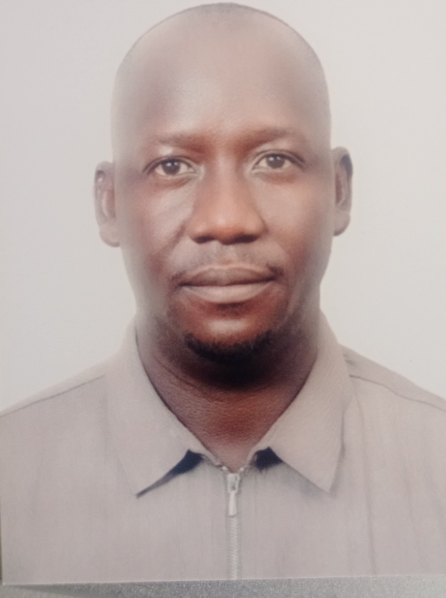

OGWANG MOSES
Personal Profile
ICT Professional | Passionate about Technology & Public Service

Personal Profile
ICT Professional | Passionate about Technology & Public Service
I am Moses Ogwang, a Police Officer in the Uganda Police Force with over ten years of experience in security operations, incident response, and ICT-related tasks. I am passionate about technology and how it can improve service delivery and public safety.
My long-term ambition is to secure an ICT position within the Ministry of ICT & National Guidance, where I can contribute my technical skills and experience to support national digital transformation and innovation.